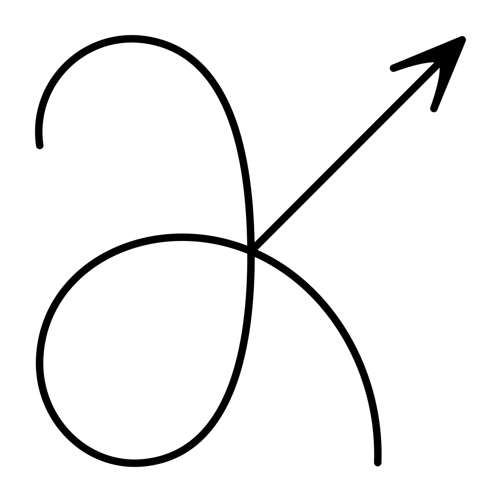
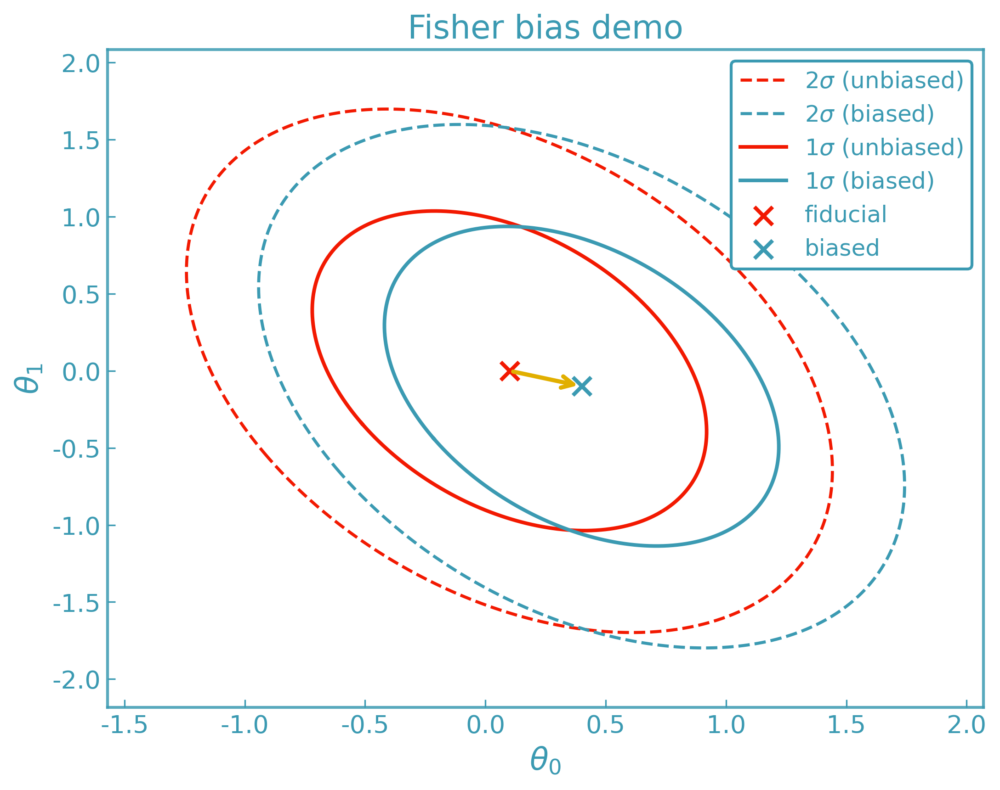
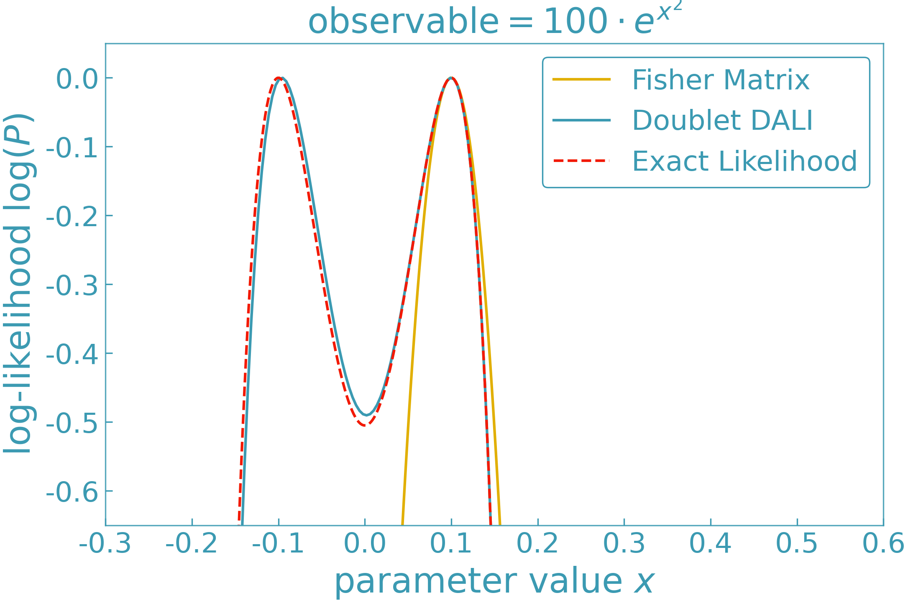
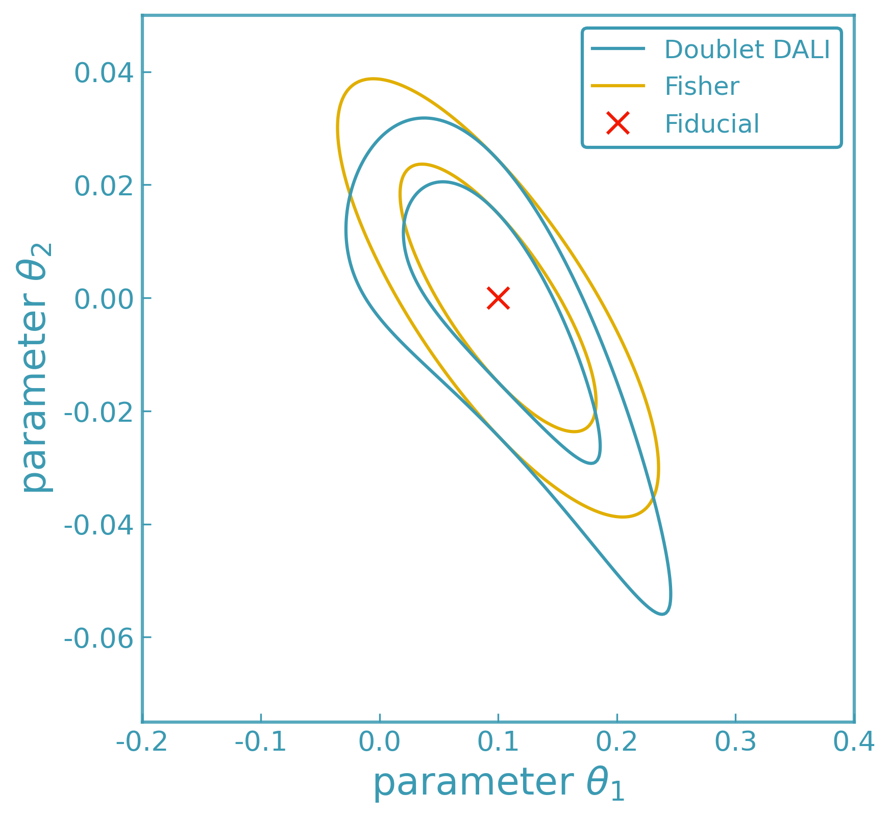

ForecastKit#
{kind=link}
ForecastKit provides derivative-based tools for local likelihood and posterior analysis. It uses numerical derivatives to construct controlled approximations to a model’s likelihood or posterior around a chosen expansion point.
The toolkit includes multiple Fisher-matrix formalisms, Fisher bias, Laplace approximations, and higher-order DALI expansions. It also provides utilities for contour visualization and posterior sampling based on these local approximations.
All methods rely on DerivativeKit for numerical differentiation and work with arbitrary user-defined models.
Runnable examples illustrating these methods are collected in Examples.
Fisher Information Matrix#
The Fisher matrix [1] quantifies how precisely model parameters can be determined from a set of observables under a local Gaussian approximation.
Given:
parameters \(\theta = (\theta_1, \theta_2, \ldots)\)
a model mapping parameters to observables \(\nu(\theta)\)
a data covariance matrix \(C\)
ForecastKit computes the Jacobian
using DerivativeKit and CalculusKit, and constructs the standard Fisher matrix
The Fisher matrix can be inverted to yield the Cramér–Rao lower bound [2] on the parameter covariance matrix under the assumption that the likelihood is locally Gaussian near its maximum. In this approximation, the inverse Fisher matrix provides a lower bound on the achievable variances of unbiased parameter estimators, independent of the specific inference algorithm used. As a result, Fisher matrix methods offer a fast and computationally efficient way to forecast expected parameter constraints without performing full likelihood sampling.
Interpretation:
The Fisher matrix provides a fast, local forecast of expected parameter constraints under a Gaussian likelihood approximation.
Example:
A basic Fisher matrix computation is shown in Fisher matrix
Generalized Gaussian Fisher#
When the data covariance depends on the model parameters, the standard Fisher matrix must be generalized to include derivatives of both the mean and the covariance [3].
For a Gaussian likelihood with mean \(\mu(\theta) = \langle d \rangle\) and covariance \(C(\theta) = \langle (d - \mu)(d - \mu)^{\mathrm T} \rangle\), the Fisher matrix is
Here \(C_{,\alpha} \equiv \partial C / \partial \theta_\alpha\) and \(\mu_{,\alpha} \equiv \partial \mu / \partial \theta_\alpha\).
This expression reduces to the standard Fisher matrix when the covariance is independent of the parameters.
Interpretation:
The generalized Gaussian Fisher provides a consistent local approximation when both the signal and noise depend on the model parameters.
Example:
A worked example is provided in Gaussian Fisher matrix.
X–Y Fisher Formalism#
The X–Y Fisher formalism [4] applies when the observables are naturally split into measured inputs \(X\) and outputs \(Y\), both of which are noisy and possibly correlated.
The joint data covariance is written in block form as
and the model predicts the expectation value of the outputs as \(\mu(X, \theta)\).
Assuming the model can be linearized in the latent true inputs \(x\),
the latent variables can be marginalized analytically.
The resulting likelihood for \(Y\) is Gaussian with an effective covariance
The Fisher matrix then takes the same form as the generalized Gaussian Fisher, with the replacement \(C \rightarrow R\):
Interpretation:
The X–Y Fisher matrix consistently propagates uncertainty in the measured inputs into the output covariance, enabling Fisher forecasts when both inputs and outputs are noisy.
Example:
A worked example is provided in X–Y Gaussian Fisher matrix.
Fisher Bias#
Small systematic deviations in the observables can bias inferred parameters [9]. These deviations are encoded as a difference data vector
ForecastKit computes the first-order Fisher bias vector
and the resulting parameter shift
ForecastKit returns:
the bias vector
the induced parameter shift
optional visualization of the bias relative to Fisher contours
Interpretation:
Fisher bias estimates how small systematic errors in the observables translate into shifts in best-fit parameters.
{kind=link}

Example:
A worked example is provided in Fisher bias.
Laplace Approximation#
The Laplace approximation [8] replaces the posterior distribution near its maximum by a multivariate Gaussian obtained from a second-order Taylor expansion of the negative log-posterior.
Let the log-posterior be
Expanding around the maximum a posteriori (MAP) point \(\hat{\theta}\), where \(\nabla \mathcal{L}(\hat{\theta}) = 0\), gives
where the Hessian matrix is
Under this approximation, the posterior is Gaussian,
with covariance given by the inverse Hessian of the negative log-posterior.
In the special case of a flat prior and a Gaussian likelihood, the Hessian reduces to the Fisher information matrix, and the Laplace approximation coincides with the Fisher forecast.
DALI (Higher-Order Forecasting)#
The DALI expansion (Derivative Approximation for LIkelihoods; [5]) extends Fisher and Laplace approximations by retaining higher-order derivatives of the likelihood around a chosen expansion point.
Expanding the log-posterior locally in parameter displacements \(\Delta\theta = \theta - \hat{\theta}\), DALI approximates the posterior as
where
\(F_{\alpha\beta}\) is the Fisher matrix,
\(D^{(1)}_{\alpha\beta\gamma}\) and \(D^{(2)}_{\alpha\beta\gamma\delta}\) are the second-order (doublet) DALI correction terms,
\(T^{(1)}_{\alpha\beta\gamma\delta}\), \(T^{(2)}_{\alpha\beta\gamma\delta\epsilon}\), and \(T^{(3)}_{\alpha\beta\gamma\delta\epsilon\zeta}\) denote third-order (triplet) DALI correction terms,
all evaluated at the expansion point \(\hat{\theta}\).
For Gaussian data models with parameter-independent covariance, these tensors can be expressed directly in terms of derivatives of the model predictions, allowing DALI to be constructed using numerical derivatives alone.
At second order (“doublet DALI”), the posterior takes the form
Including third-order (“triplet DALI”) terms introduces additional correction tensors \(T^{(i)}\), which capture higher-order non-Gaussian structure while preserving positive definiteness of the approximation.
Keep in mind that:
DALI is a local approximation around
theta0and may degrade far from the expansion point.DALI may perform poorly for models with weak or sublinear parameter dependence, or when increasing the expansion order does not improve convergence (see discussion in e.g. [5] and section VI.B of arXiv:2211.06534).
If DALI does not stabilize as the expansion order is increased, numerical posterior sampling (e.g.
emcee) should be used to validate the approximation.
Interpretation:
DALI provides a controlled hierarchy of local posterior approximations, reducing to the Fisher and Laplace limits when higher-order derivatives vanish.
{kind=link}

{kind=link}

Example:
A worked example is provided in DALI tensors.
Posterior Sampling and Visualization#
ForecastKit provides utilities to draw samples directly from Fisher, Laplace,
or DALI-expanded posteriors and to convert them into GetDist-compatible [6]
MCSamples objects.
This enables:
posterior sampling based on local likelihood approximations using emcee [7]
easy integration with GetDist for contour plotting and statistical summaries
direct contour visualization and uncertainty propagation
comparison between Fisher, Laplace, and DALI forecasts
These workflows are designed for forecasting and local posterior analysis, providing fast and controlled approximations to parameter constraints without requiring full likelihood evaluations with MCMC or nested sampling methods.
Examples: Worked examples are provided in: - Fisher contours for Fisher-based GetDist samples - DALI contours for DALI-based posterior sampling - Laplace contours for Laplace approximations
Backend Notes#
If
methodis omitted, the adaptive derivative backend is used.Any DerivativeKit backend may be selected (finite differences, Ridders, Gauss–Richardson, polynomial fits, etc.).
Changing the derivative backend affects only how derivatives are computed, not the forecasting logic itself.
ForecastKit is fully modular and designed to scale from simple Gaussian
forecasts to higher-order likelihood expansions with minimal code changes.